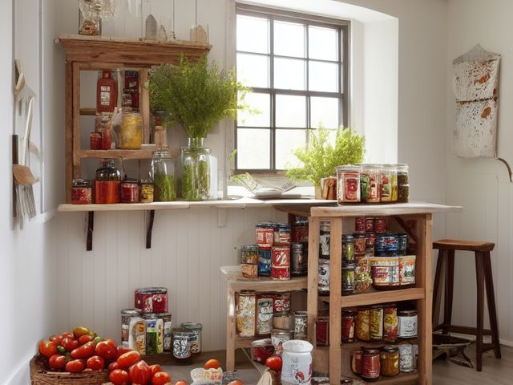

Pantry micro zone
The Canned and Jarred Goods
Holds the cans and jars that turn an empty-fridge week into dinner.
One session: 30-45 min. most of it in Sort, since the work is turning cans to read dates and counting duplicates

What done looks like
Cans sit in rows on risers with every label facing you: tomatoes together, beans together, soup together. No dented seams, no domed lids, no jar hidden behind another jar, and the oldest date in each row standing at the front of it.
Check these before you start
- Poison, choke, or strangleA bulging or leaking can is a spoilage warning and no amount of cooking makes it safe. Bag it sealed, bin it, and wash the shelf underneath where it stood.
- Fall, cut, or crushA dense row of cans on a high shelf. One tin landing on a bare foot is a broken toe, and a glass sauce jar bursting on tile leaves splinters you find for weeks. Cans and glass belong below shoulder height.
The six passes, in order
Work them in this order. Sorting after you have arranged things means arranging things you were about to remove.
Sort
Decide what stays. Everything else leaves the zone now.
Take every can and jar out, turn each one until you find the date, and put the dented, rusted and bulging ones straight into the bin rather than back on the shelf. Then count duplicates, because four jars of the same pasta sauce is telling you exactly what you keep buying blind.
Straighten
Give what stays a home, placed where the hand actually reaches.
Rows by meal rather than by size. Tomatoes, coconut milk and stock together because they cook together, beans and tuna together because they are lunch, and tall jars behind short cans so nothing disappears.
Shine
Clean it, and use the cleaning to inspect what you cannot see when it is full.
Wipe the sticky rings where a honey jar or a sauce lid has wept, and wash the threads of the jars you open most. A sticky shelf edge is how ants find their way to you.
Safety
Make the zone safe for everybody who uses it, including the shortest person.
Poison, choke, or strangle: a can with a domed lid, a weeping seam, or a hiss as it opens is spoiled rather than merely old. It does not get tasted, decanted, or given to the dog. "Find it, and fix it now."
Standardize
Write down the best way you know today, so it survives you forgetting.
Label each row with its category and put the back row up on a riser so it sits above the front row. Once you can read every label without moving a can, the gap where the chopped tomatoes used to be is your shopping list writing itself.
Sustain
Attach the reset to something that already happens, so it keeps itself.
When you sit down to write the shopping list, walk the can rows first and read the gaps. A missing tin of tomatoes is far easier to see on a shelf than to remember at a table.
The best-before you keep arguing with
The soup two years past its date, the chickpeas whose date has rubbed off, the fancy jar somebody gave you that you are saving for an occasion that has not arrived. Best-before is about quality rather than safety, so you have been keeping these on a technicality and never eating them. End the argument with one pass: anything past best-before goes into a meal in the next seven days or it goes out this week. Anything past a use-by date goes now. Anything dented on the seam, rusted, or domed goes now regardless of the date, and it does not go to the food bank either. If you would not open it tonight, you are not saving it, you are storing it.
Cleaning it properly
The sticky ring is what you are hunting. Wipe every weeping lid and the shelf under it, wash the threads of the jars you open most, and leave no tacky edge for ants to follow.
Inspect as you clean. Cleaning is the only time you see the zone empty, so use it.
- A domed or bulging lid, a weeping seam, or a can that hisses, all of which say spoiled rather than merely old, worth flagging before it is opened.
- A rust ring on the base of a can or on the shelf under it, a sign of a slow moisture problem where the tin has stood.
- A fresh sticky drip pointing to a jar that has cracked or a lid that has failed and is leaking now.
- An ant trail or a single scout following a sugary edge, telling you a sticky spot got missed last time.
- A shelf board bowing under a dense row of cans, or a label peeling with damp behind it.
The standard that keeps it fixed
Every label faces out, every row holds one category, and the oldest date sits at the front of its row.
Reset trigger. When you carry the recycling out past the pantry, you face up the can rows on the way.
Next in this room
- The Dry Goods Shelves, the zone before this one
- The Baking Zone, the zone after this one
- All 5 micro zones in the Pantry
Related reading
- What is 6S?
- This zone's safety pass, in full
- Is one spot in this zone always the one you skip?
- Why this zone gets messy again
- Decluttering vs. organizing
- Before you buy storage for this zone
- Still does not fit, even after the honest count?
- Does something in this zone actually get used somewhere else?
- Stuck on one item in this zone?
- Written the standard, but nobody else follows it?
- Does everyone in the house agree what "done" looks like here?
- Does more than one person use this zone?
- Found a duplicate of something in this zone?
- Why the standard above names one home per category
- Is the everyday item in this zone actually the easy one to reach?
- Not sure whether to keep something in this zone?
- Does this zone keep running out of something?
- Started this zone and stalled partway through?
When you want it off the screen
Carry The Canned and Jarred Goods into the room
The method above is complete and free. The Whole House Print Pack puts The Canned and Jarred Goods and the other 113 micro zones on 684 printable cards, so the steps you just read are not stuck behind a phone screen while your hands are full.
The Print Pack, 19 dollarsJust this zone, 4 dollarsOr draw a card free
The Canned and Jarred Goods on its own is 4 dollars for 6 cards. All 114 micro zones is 19 dollars for 684. The whole house is the better buy; the single zone is here so you can take only what you are working on.
If The Canned and Jarred Goods keeps fighting back, the real problem usually sits somewhere else in the room. A one hour virtual consult is 250 dollars: we find the function, the friction and the root cause together, and you keep a written standard for the space. See what a consult covers.